Computer Architecture and Parallel Systems
Obsah
Computer Architecture
From the modern point of view, architecture of computer, can be divided into four categories:
Structure and Layout – parts description and their interconnection,
Interaction and Cooperation – describe the dynamic communication of all working parts of a computer,
Realization and Implementation – describe internal structure of all working parts,
Functionality and Activity – final behavior of the whole computer.
Von Neumann Architecture
John von Neumann introduced a universal computer. It most comply with some principles and criteria:
Computer consists of memory, arithmetical-logical unit (ALU),
all parts of a computer are connected together by bus,
computer structure is independent on the computed problem, a computer is programmed with content of memory,
every computing step depends on the previous step,
machine instruction and data are in the same memory,
memory is split to small cells with the same size; their ordinal numbers are called address numbers,
program consists of a sequence of instructions; instructions are executed in order they are stored in memory,
sequence of instructions can be changed only by unconditional or conditional jump instructions,
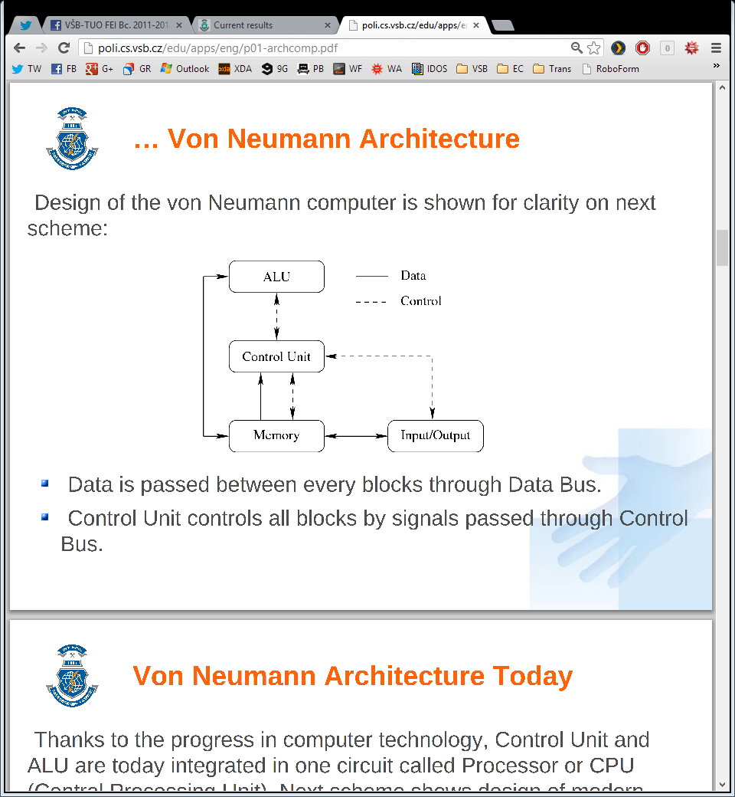instructions, characters, data and numbers are represented in binary form.
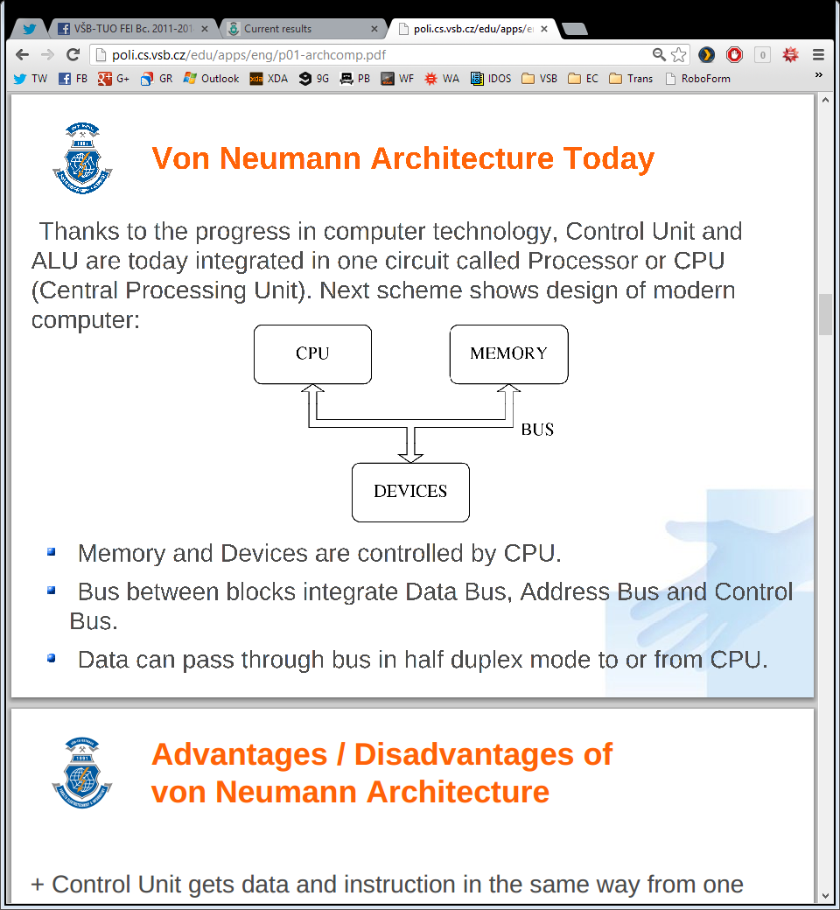
Today, Control Unit and ALU are integrated in one circuit called Processor or CPU shown on the second picture. Memory and devices are controlled by CPU, bus between blocks integrate Data Bus, Address Bus and Control Bus. Data can pass through bus in half duplex mode to or from CPU.
Advantages of Von Neumann Architecture
Control Unit gets data and instruction in the same way from one memory; it simplifies design and development of the Control Unit.
Data from memory and from devices are accessed in the same way.
Memory organization is in the hands of programmers.
Disadvantages of Von Neumann Architecture
Serial instruction processing does not allow parallel execution of program. Parallel executions are simulated later by the OS.
One bus is a bottleneck. Only one information can be accessed at the same time.
Instruction stored in the same memory as the data can be accidentally rewritten by an error in a program.
Harvard Architecture
Developed in 1947, Harvard University created slightly different architecture. Memory for data was separated from the memory for instructions.
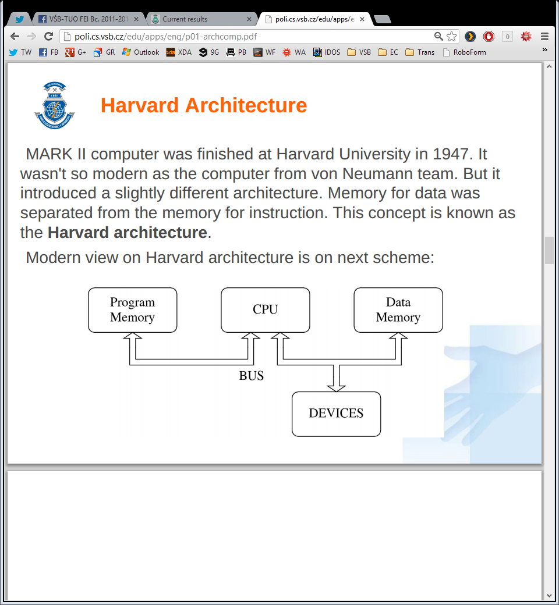Until today both architectures are used in modern computers, both used massively in mainstream production.
Harvard architecture is used primary for small embedded computers and signal processing. Von Neumann is better for desktop computers, laptops, workstations and high performance computers.
Some computers may use advantages from both architectures. Typically they use two separated memories. The first one is used for programs and the second one to store dynamic data. A good example can be handheld devices – PDA and mobile phones.
Advantages of Harvard Architecture
Two memories with two buses allow parallel access to data and instructions. Execution can be two times faster.
Both memories can be produced by different technologies (Flash/EEPROM, SRAM/DRAM).
Both memories can use different cell sizes.
Program can’t rewrite itself.
Disadvantages of Harvard Architecture
Control unit for two buses is more complicated and more expensive.
Production of a computer with two buses is more expensive.
Development of a complicated control unit needs more time.
Free data memory can’t be used for instruction and vice-versa.
Generations of computers
First generations used vacuum tubes, drums for memory (capacity in kB) and synchronous CPU to communicate with devices.
Second generations used transistors, ferrite for memory (capacity in 10 kB) and asynchronous CPU to communicate with devices.
Third generations used SSI and MSI IC, ferrite and IC for memory (capacity in 1 MB) and channels to communicate with devices.
Fourth generations used LSI IC and VLSI IC, LSI IC and VLSI IC for memory (capacity in 10 MB) and peripheral controllers to communicate with devices.
Communication with devices
According to Von Neumann architecture, all parts of computers are connected together by bus. Bus is a bundle of parallel wires separated to three main parts:
Data Bus – wires are marked as D0 up to DN, where N is the number of data bits (wires) used for transmission.
Address Bus – wires are marked as A0 up to AM, where M is the number of bits used for addressing.
Control Bus – set of control signals to control activity on bus
Reset – signal is used to initialize all devices connected to bus
RD/WR – control direction of data transmission from / to devices
MEMR/MEMW – control data transfer from / to memory.
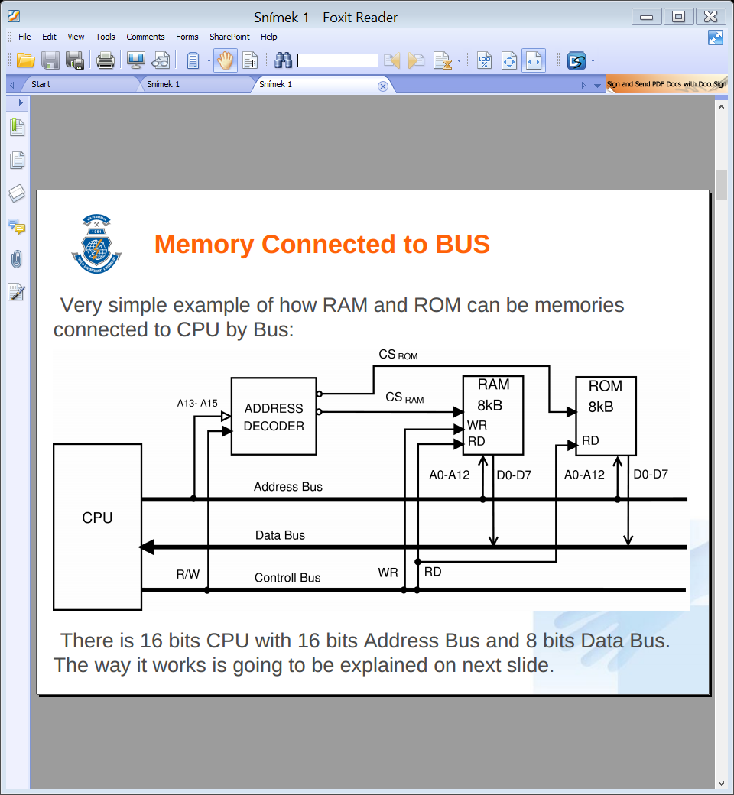
There is 16 bit CPU with 16 bit address bus and 8 bit data bus.
To address 8 kB, it is necessary to use 13 bits, thus signals A0 up to A12 are connected directly to RAM and ROM chip.
The signal RD and WR from control bus are used to control direction of communication.
Address decoder generates signal CS for RAM and ROM from three highest bits A13 up to A15.
Data from / to RAM and ROM are transferred by data bus D0 up to D7.
In some computers, where low-cost is important, it is possible to reduce the number of wires in the bus. Some parts in this case are multiplexed. In the first step the signals are sent to Address Bus and in second step the same wires are used to transfer data. Multiplexing reduces computer’s speed, but it makes it cheaper and easier.
Address decoder
The address decoder is a comparator of input value given by signals A0 up to AN and stored value. When both values are the same, Address Decoder activates the output pin. Address decoder can be connected to all signals on the address bus, or can use only selected signals. All chips connected to a Data Bus must satisfy the requirement that pins on chip connected to signals D0 up to DN are three states.
When chips reads data from data bus, pins must be in input mode. In situation, when chip writes data to the data bus, its pins must be in output mode. When chip is not active, all pins are in high impedance state, not to disturb other chips on the bus.
I/O Ports
The simplest way for communication with devices is the usage of Input and Output Ports. The devices has integrate data register, called Port, where data are exchanged between CPU and Devices.
When an executed program requires data from device, control unit generates RD signal and devices writes data to the bus. This method is used very rarely. All devices must be always prepared for reading and writing.
The main disadvantage is that direct usage of I/O Ports does not use any form of feedback and thus data may be lost during transfer.
I/O Ports with Indicator
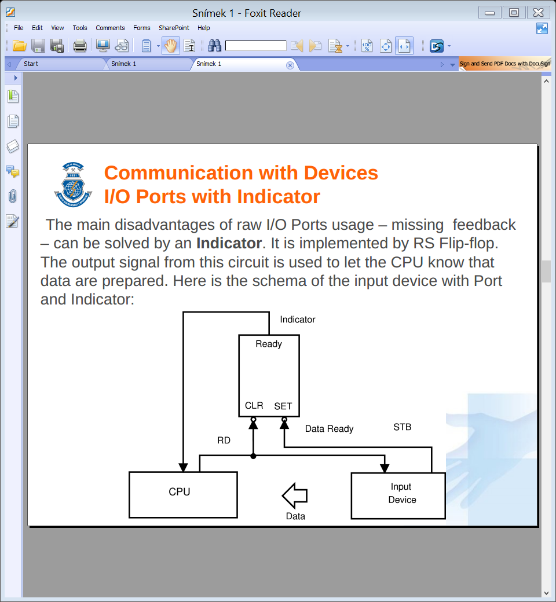The main disadvantage of I/O ports usage – missing feedback – can be solved by an indicator. It is implemented by RS Flip-flop. When Input device has the data prepared, it uses STB signal to set the indicator. Its output is observed by executed program. If indicator is set, it is possible to read data safely. Signal RD will clear the indicator during reading.
This method will still have a problem with data loss. If CPU delays reading from the device, it may fail or may overflow internal register of buffer. The method, when the program first checks the indicator in the loop and then reads data, is called spooling and consumes too much of CPU’s performance.
The indicator can be also used for writing. The program in CPU must check the indicator before it writes data, to make sure, that the previous data was accepted.
Device with Buffer
When big data throughput is required, it is necessary to implement the buffer between the devices and the CPU. The Buffer between the CPU and Device allows to send a block of data in one step.
Communication with Interrupt
To address spooling, a better technology for communication with devices was introduced – interrupt. It is an event generated by device, which interrupts the execution of the main program, then the CPU calls the interrupt routine and when the device is handled, the CPU returns execution to the main program. No testing of indicators in needed.
The interrupt is handled by special interrupt controller, which is able to serve more interrupt requests at the time and able to communicate with the CPU.
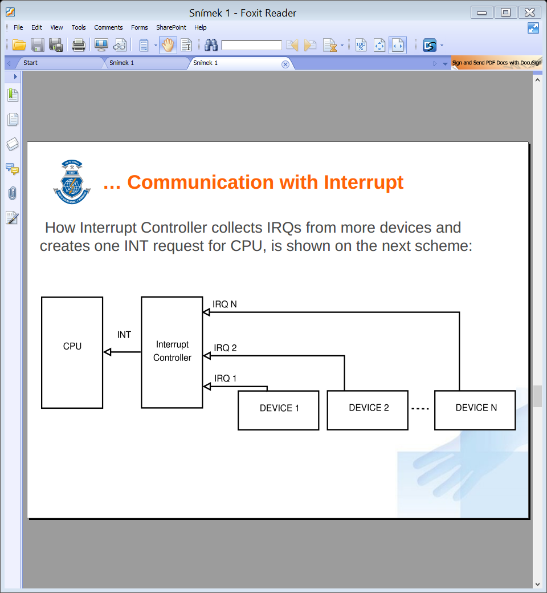
Communication with devices using I/O ports has one big weakness. All data must be transported through the bus two times. When program reads data from the device, the CPU has to read data from the device to the CPU and then stores it into the memory.
DMA – Direct Memory Access
To remove the main problem of I/O ports, DMA was designed. All device controllers contain their own bus controller with registers. The first one for the data transfer, the second one for the address and the third one is the counter. The DMA controller controls data transmission from device to memory directly without involving the CPU. It also improves the bus bandwidth. The DMA controller have to cooperate with the CPU, because only one bus controller can control the bus at any moment.
CPU sets the Address Register and the Counter to the initial value.
The DMA controller sends DMA-Request to CPU.
When CPU releases the bus, it sends DMA-Accept to allow one DMA transfer.
DMA sets value from address register to Address Bus.
DMA writes data to Data bus.
Memory stores data from bus to given address.
DMA increments Address Register and decrements the Counter.
One byte is transferred.
If the counter is zero, the transmission ends.
If the counter is not zero, the DMA continues from point 1.
DMA saves the CPU time required for computing and it uses time, when CPU does not access the bus. It greatly improves overall system throughput and the computing performance.
Channels
High level replacement of the DMA. Channel Controller has its own CPU to directly control the connected devices. CPU only starts and stops communication.
SCSI (Small Computer System Interface) – introduced in 1981, originally 5 MB/s, today 640 MB/s;
FC (Fiber Channel) – used today for hard drives and disk arrays.
RISC Processors
From early 80’s we started to divide processors to two groups:
CISC – Complex Instruction Set Computer
RISC – Reduced Instruction Set Computer
We can briefly summarize several improvements of RISC architecture:
Only basic instructions are implemented; complex instructions are substituted by sequence of instructions.
All instructions have the same length – reading them from memory is faster.
All instruction use the same format – decoding is easier and decoding unit can be simple.
Microprogramming controller is replaced by faster hardwired controller.
Only two instructions can read / write data from / to memory - LOAD and STORE.
Addressing modes are reduced to minimum number.
More registers are implemented directly in processor.
Pipelined execution of instruction is used.
In every machine cycle one instruction is completed.
Complex technical processor equipment is transferred to the programing language compiler.
More registers have to be implemented, because all instructions are not able to access data directly in the memory and more temporary data is necessary to be stored in the processor.
Pipelining
The processor is a sequential circuit. It takes input command for processing and until it is done, it does not accept any new command. The speed of execution is in the most cases given by external clock source. To use all parts of processor permanently, we change sequential circuit to chain of independent circuits. To consider the circuit as pipelined, all stages have to work for the same time, otherwise the slowest one hinders the process.
FE – Fetch instruction
DE – Decode instruction
LD – Load data and operands
EX – Execute instruction
ST -Store result
| T1 | T2 | T3 | T4 | T5 | T6 | T7 | T8 | T9 | T10 | T1 | T2 | T3 | T4 | T5 | T6 | T7 | T8 | T9 | T10 | |
|---|---|---|---|---|---|---|---|---|---|---|---|---|---|---|---|---|---|---|---|---|
| FE | I1 | I2 | I1 | I2 | I3 | I4 | I5 | I6 | I7 | I8 | I9 | I10 | ||||||||
| DE | I1 | I2 | I1 | I2 | I3 | I4 | I5 | I6 | I7 | I8 | I9 | |||||||||
| LD | I1 | I2 | I1 | I2 | I3 | I4 | I5 | I6 | I7 | I8 | ||||||||||
| EX | I1 | I2 | I1 | I2 | I3 | I4 | I5 | I6 | I7 | |||||||||||
| ST | I1 | I2 | I1 | I2 | I3 | I4 | I5 | I6 | ||||||||||||
| CISC Processor | RISC Processor | |||||||||||||||||||
The jump instruction changes the address of the next executed instruction and therefore instructions in progress are lost. The Fetch unit has to start loading instructions from the new address. The code contains up to 14 % of conditional jumps. A very long pipeline can cause great ineffectiveness, given by unnecessary losses of instructions in progress. This problem, known as pipeline queue filling, also arises when the program modifies itself. The problem is solved in modern processors in easy way: the program is not allowed to modify own code while running.
Delayed Jump
One simple method to manage conditional jumps – the processor starts loading instructions from the new address after all unfinished instructions are done. Let’s have a three level pipelining. Before each jump, compiler must put an instruction, which would execute anyway (or NOP – No Instruction), so the result of a jump can be resolved and no harm 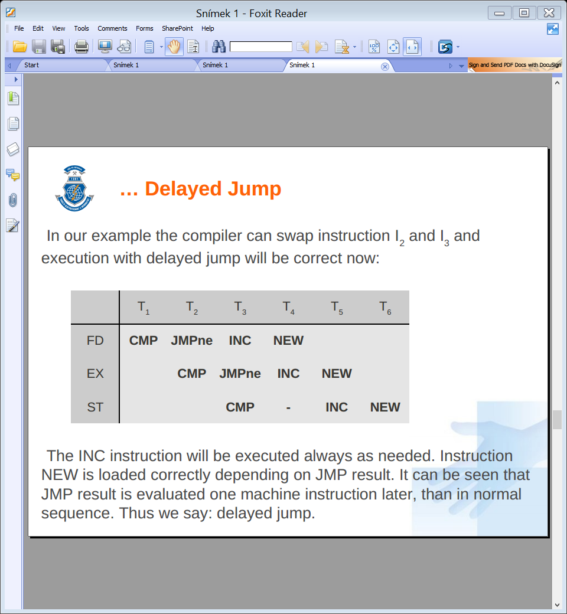done.
Bit Branch Prediction
The prediction can be divided into 2 groups:
Static prediction – bits are part of machine instruction and are set by a compiler or a programmer. They are set once and for all.
Dynamic prediction – bits are in the processor and they are controlled dynamically during the code execution.
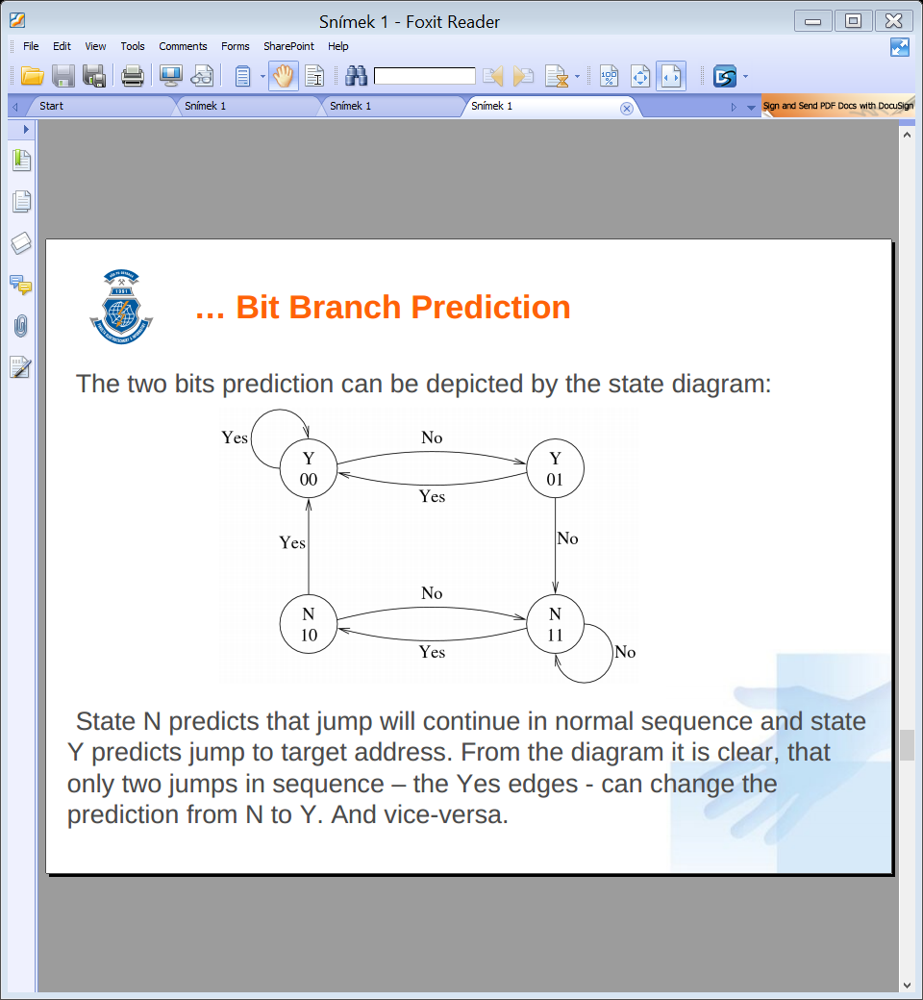One bit static prediction is used in less powerful systems – it generates two failures in every loop, which is no problem for processors with short pipeline. In modern high performance systems tow bits dynamic prediction is used. The processor monitors the behavior of the conditional jump instruction and changes prediction only after two failures in the sequence. Bits are implemented directly in processor in Branch Prediction Table part to maximize the performance.
Super-Scalar Architecture
Used in the highest performance computers. The processor has implemented two parallel pipelines. Usually only one pipeline is working. When conditional jump is detected in early stages of instruction processing, first pipeline continues in processing in the normal way – following instruction sequence. The second pipeline obtains signal from the first one to start execution at conditional jump target address. But saving results is not allowed.
When the result of conditional jump is known, super-scalar control unit in processor decides, which pipeline will continue. The first one can continue in the normal way without losses. When the second one is selected, instructions from target address are in progress and processing can continue without delay. The disadvantage of super-scalar architecture is the high price.
Data and Structural Hazards
In many cases a problem may occur, when some pipeline stage needs, which are not yet available. For example some instruction needs address of operand, but address is not yet stored by the previous instruction. If it happens, we call it a data hazard. The problem can be solved directly in the pipeline, or by a compiler that prepares the correct instruction sequence.
Another type of the hazard occurs during handling the resources. When more pipeline stages need to load data from memory, all stage circuits need access to the bus. But computer contains only one bus and it is impossible to use the bus parallel. The types of hazards are called structural hazards.
ARM
One of the best known RISC processors is ARM – Acorn RISC Machine. The first production chip was available in 1986. The ARM is 32-bit processor with 32-bit data bus and 26-bit address bus. It contains 27 registers and core of 30 000 transistors. In early 90’s Acorn started cooperate with Apple and the result was ARM6 and ARM7 with 32-bit address bus, cache on-chip and MMU. In the 4th generation 5-stage pipeline was introduced in processor, the 5th generation of processor introduce 64-bit data bus to allow fetching two instructions in one cycle. Latest ARM generation uses 11-stages pipeline.
ARM processors are very popular in many applications – mobile phones, PDA, graphics accelerators, routers, play-consoles, notebooks, tablets, robots, etc.
MIPS
The first MIPS (Microprocessor without Interlocked Pipeline Stages) was introduced in 1985. The first R2000 was a full 32-bit version with 32 registers, MMU with flat 4GB addressing and virtual memory. The pipeline had 5-stages: fetch, decode, execute, memory-access, write-result. It was possible to work in little- and big-endian memory model.
Although design eliminated a number of useful instructions, such as multiply and divide, it was evident that the overall performance of the computer was dramatically improved, because the chip could run at much higher clock rates. First 64-bit version was introduce in 1991. The Rx000 processor family was very important for SUN and SGI workstations.
One of the more interesting applications of the MIPS architecture is its usage in multiprocessor supercomputers. The MIPS cores have been commercially successful, now being used in many consumer application: Cisco and Mikrotik’s router board routers, Wi-Fi AP, cable modems and ADSL modems, smartcards, laser printer engines, set-top boxes, robots, handheld computers, Sony PlayStation 2 and Sony PSP.
Microchip and Atmel
The RISC architecture is not only used for phones, desktops or supercomputers. Today it is used for the smallest 8/bit microcomputers.
One of the best known, massively used microcomputers are PICs, produced by Microchip. It implements one working register, 2-stages pipeline, after the jump instruction there is one machine cycle delay. It is based on Harvard architecture and implements only about 40 instructions. PICs are designed in wide range, from battery supply version, up to the fast version with Ethernet and USB.
Another well-known RISC microcomputer is AVR from Atmel. The processor is designed as Harvard architecture. It implements 2-stages pipeline, 32 registers and instruction set is designed directly for C-language compiler. It is more user friendly than PIC.
The AVR is fast. The performance in MIPS is equal to clock frequency, PIC uses only quarter of clock signal.
Intel x86 History
Intel x86 represents the CISC processors evolution.
Intel 8080
1974, produced with NMOS 6 um, 6000 transistors, 2 MHz, 8b data bus, 16b data bus
This 8-bit processor is not directly the first member of x86 series, but it cannot be skipped. One of the first commercially successful microprocessors. That became the basis for a number of the first single-board computers and its instruction set inspired other manufacturers to develop 8-bit processors.
Intel 8086
1976, produced with HMOS 3.2 um, 29000 transistors, up to 10 MHz, 16b data bus, 20b address bus
This is the first 16-bit processor. It is able to address up to 1MB of memory using the 64kB block segmentation. CPU is divided into two parts: execution unit and bus control unit. It contains eight 16-bit wide registers and four segment registers. This set of registers is the basis for all subsequent generations. The instruction queue is only 6 bytes long and after jump instruction it is erased and refilled. It became basis for the PC-XT architecture from IBM.
Intel 8088
Same internal architecture as 8086, only the data bus width was reduced to 8-bit. The performance was decreased, but at the time there were many available peripheral chips for 8-bit microprocessors and they could be used for the Intel 8088 as well.
Intel 80186
1982, produced with HMOS 1.3 um, 55000 transistors, up to 25 MHz, 16b data bus, 20b address bus
80186 introduced improved architecture and many accelerated instructions. The processor was primarily designed for embedded devices and it integrates many peripheral devices directly on the chip, especially DMA controller, clock, timer and ports. Thus it was incompatible with the PC-XT architecture. It was produced for 25 years and over these years it was gradually modernized. It was also licensed to many other manufacturers.
Intel 80188 – the 8b data bus
Intel 80286
1982, produced with HMOS 1.5 um, 134000 transistors, up to 25 MHz, 16b data bus, 24b address bus.
The second x86 generation. Higher performance was achieved by two enhancements: most instructions needs less machine cycles for execution and the processor works on the higher frequency. The processor implements the new Protected Mode with possibility up to 16MB of RAM. It uses it in the MMU (Memory Management Unti) and implements Virtual Memory in range 1GB. These advancements allow to develop new safe, multitasking and multiuser OS. The IBM uses this CPU for the new standard known as PC-AT.
Intel 80386DX
1985, produced with CHMOS 1.5 um, 275000 transistors, up to 40 MHz, 32b data bus, 32b address bus.
The first full 32-bit processor with the full backward compatibility in R-M. All registers were extended to 32-bit. The address and data bus are 32-bit wide. In P-M the processor was able to address 4GB memory for each process and up to 64TB of the whole virtual memory. This addressing mode has been used until today. The processor implemented new Virtual Mode for compatibility with old R-M programs. Therefore old MS-DOS programs could be used in new operating systems.
The processor had cache memory controller for fast L1 cache memory on the board. This memory was necessary for processors operating at a frequency over 30 MHz. First computer with 80386DX was introduced by Compaq.
Intel 80386SX – the 16b data bus
FPU coprocessor 8087/287/387 – the first three generation of Intel processors were produced without units for floating point numbers computing. These Floating Point Units, called coprocessors, were produced as separate circuits. Computer manufactures had to implement a separated slot for coprocessor on the boards.
Intel 80486DX
1989, produced with CHMOS 1 um, 1.2 mil. transistors, up to 100 MHz, 32b data and address bus
The great increase of number of transistors indicated a lot of modernizations. Many improvements were done in ALU, in instruction queue and in throughput between internal parts. The processor contains the L1 cache with size of 8 kB shared for data and instructions. MMU unit was improved too, especially for the higher performance in the protected mode. Another innovation was the FPU unit implementation directly on the chip.
Intel 80486SX – version without the FPU
Intel 80486DX2 – version doubled the internal clock frequency and it was fully pin-compatible with 486DX.
Intel 80486DX5 – version tripled the internal clock frequency
Pentium
1993, BiCMOS 0.25 um, 3.1 mil. transistors, up to 300 MHz, 64b data bus and 32b address bus
The fifth generation called Pentium was the first x86 processor that implemented some RISC and superscalar features. The processor implemented two parallel ALU units. The branch prediction unit was implemented in the processor too. The processor contained separated L1 caches for data and code. FPU was integrated as well. In 1997, Intel added the multimedia unit MMX.
Pentium Pro
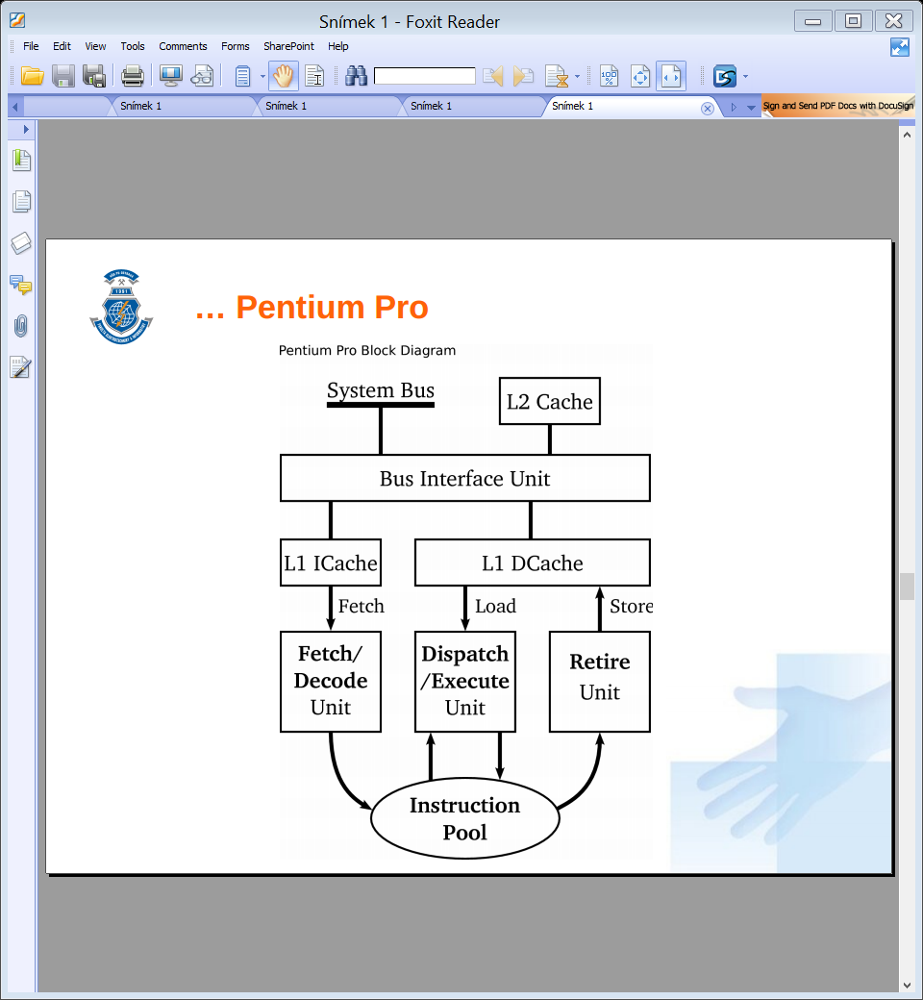1995, BiCMOS 0.35 um, 5.5 mil. and 15. mil L2 cahce, up to 200 MHz, 64b data bus and 36b address bus
The sixth generation brought a major technological breakthrough. It’s RISC processor with the backward CISC compatibility. Pentium Pro was primarily designed for servers thanks to its higher performance and higher price. It allows address up to 64GB physical memory.
The Processors’ but interface unit is directly connected to L1 caches, separated for code and data.
The Fetch & Decode Unit reads old CISC x86 instructions from the memory and decodes them to one or more RISC instructions, called micro-operations. All micro-ops have the same length – 118 bits. The Decode unit is very complex and is composed of more internal parallel working units to decode CISC instructions fast enough.
The decode unit is followed by the pure RISC processor. Decode instructions are not progressing into the instruction queue stored in Instruction Pool, a bank of 40 instructions. It uses out of order execution with complex execution unit.
Executed instructions are put back to the pool with results, after the Retire Unit stores results back to registers and to the L1 cache. The processor contains Branch Prediction Unit and in the previous scheme is hidden in Fetch and Decode Unit. Prediction success rate is usually about 90 %.
Pentium 2
1997, BiCMOS 0.18 um, 7.5 mil. + 20 mil. L2 cache, up to 533 MHz, 64b data bus and 36b address bus
Direct successor of Pentium Pro with MMX unit added, L2 cache is still in separated chip. High/end version of Pentium 2 with 512 kB of L2 cache marked Xeon. The low-end processor with small or none L2 cache was marked as Celeron and was used in cheap personal computers.
Pentium 3
1999, BiCMOS 0.13 um, 9.5 mil + 18 mil. L2, up to 1.3 GHz, 64b data bus and 36b address bus
It had integrated the L2 cache on single chip together with the CPU core. The execution unit got another helpers – the SSE unit and improved the branch prediction unit. The power management was significantly improved too. The P3 was the best processor for laptops for the next few years. It had later reappeared on the marked in upgraded form as Pentium M.
Pentium 4
2000, BiCMOS 0.065 um, 42 mil., 256 kB l2, up to 3.8 GHz, 64b data bus and 36b address bus
It implements new architecture NetBurst designed for the new multimedia world. The processor had the same performance as P3 on the same frequency, together with significantly higher current consumption.
The Fetch and Decode unit translates CISC instruction into RISC ones and sends them to the Out-of-order Execution Unit. The Retirement unit stores the results back to memories. The L1 code cache is placed after Fetch / Decode unit. Thus it contains decoded micro-operations. There is a pipeline with 20 stages in Pentium 4. It is two times longer than in Pentium Pro and it places greater demands on the branch prediction.
Pentium 6 EM64T
2004, BiCMOS 90nm, 125 mil. with 1MB L2, 2.888 GHz, 64b data bus and 40b address bus
First processor which adapted third-party standard. AMD at that time had a successful 64-bit technology, which was create by extending the old 32-bit architecture. Because Intel did not want to lose market position, they had to adapt.
All registers were extended to 64-bit, 8 new registers were added and address bus was extended to 40 bits. The processor had very long pipeline (30 stages), it had to be clocked by high frequency and it was overheating.
Pentium M
2003, BiCMOS 65 nm, 77 mil. with 1MB L2, 2.2 GHz, 64b data bus and 32b address bus
It was designed primarily for notebooks. Intel took the best from P3 architecture and used latest experiences with bus communication. The Pentium M with 1.5 GHZ clock had nearly the same performance as P4 with 2.5GHz clock with only 30% in comparison with P4! But his processor was strictly sold only for notebooks as part of Centrino technology.
Intel Core, Core Duo, Core Solo
2006, BiCMOS 65nm, 1 or 2 cores, 2.up to 2.2 GHz, 64b data bus and 36b address bus
Successor of Pentium M, not only desifned for notebooks, desktops and servers. It had wider bus and for the first time, two cores. And also in battery-powered computers.
Intel Core 2
2006, BiCMOS 45nm, 1 to 4 cores, 3.3GHz, 64b data bus and 36b or 40b address bus
Introduction of EM64T technology, virtually end of NetBurst architecture.
Intel Atom
2008, BiCMOS 45nm, 1 or 2 cores, up to 2 GHz, 64b data bus and 32b address bus
Reaction to ultra-low power consumption processor by AMD (such as Geode and Eden), introduction of a new architecture named Bonell. The Front-end cluster fetches and decodes instructions and passes them to Instruction queue. The Front Side Bus and L2 cache are implemented in Bus unit.
Itanium and Itanium 2
2002, BiCMOS 65nm, 2 bil. transistors, 1.7GHz, 128b data bus and 40b address bus
The 64-bit successor of Pentium family, completely designed as the new pure RISC processor. Its main weakness was the poor backward compatibility with the 32/bit predecessors. The Itanium is now designed for high performance servers and implements up to 24 MB of L3 cache directly on the chip.
Internal Computers Memory
There are many types of memories used in today’s computers. Memories are made using different technologies.
Registers – smallest and fastest SRAM memory in processor
Cache L1 – SRAM memory ranging from kB to tens of kB
Cache L2 – SRAM memory ranging from tens of kB to tens of MB
Main memory – DRAM size up to tens GB
Hard drive – magnetic memory, size up to a few TB
Optical memory – CD, DVD, etc.
Magnetic tapes with capacity up to a few TB, but it is very slow
Registers are the fastest and the most expensive. Tapes are the slowest and the cheapest.
Memory Classification
The internal computer memories are characterized by several parameters.
By memory access
RAM – Random Access Memory
SAM – Serial Access Memory,
Special access – stack, queue, multi-ports, associative memory
The second division of memories can be made according to the ability to read and / or to write:
RWM – Read and Write Memory
ROM – Read Only Memory
WOM – Write Only Mmoery
Combined Memory
The third option is to divide memories by the type of memory cell
DRAM – Dynamic RAM, cell is capacitor
SRAM – Static RAM, cell is transistor flip-flop
EPROM, EEPROM, Flash – programmable memory, cell is special MOS transistor
Memories are classified by all parameters simultaneously.
Dynamic RAM
The Dynamic RAM has all cells realized by a tiny capacitor with one transistors. All capacitors have capacity in fF (femto Farad) and they are not able to store change for a long time. They are very quickly losing their charge. Therefore the charge of all capacitors in the chip has to be periodically refreshed every few milliseconds. The refresh was earlier realized by reading the memory, e.g. by the DMA usage. Now the “hidden” refresh is implemented directly in the chip and does not need external circuits.
The chip integrates many millions or billions of cells organized in square matrix and all cells have their own addresses, given by address of a row and address of a column. Therefore we have to specify two addresses to select a single cell: the row and the column. This two-step addressing is a little slower than the direct addressing, but it needs less address signals. One matrix forms one layer on the chip. The chip can integrate more layers and on the same address of the row and the column it has more bits stored.
To write data to memory, it is necessary to sand to the memory address of the ROW and then the address of the COL. Together with the COL address data is written to the data bus. To read, processor sends to the bus the sequence of the ROW and COL address signals and the memory chip writes data to the bus in the next bus clock cycle and the processor takes them.
Fast Page DRAM – When the processor reads data from following addresses, it is not necessary to send the ROW signal again, only the following COL addresses are sent. Thus reading is faster.
Synchronous DRAM – memory obtains signals ROW and COL and then it generates the following COL signals automatically inside the chip and it sends data to the bus. No more control signals are needed. But the chip has to be synchronized with the processor clock signal.
Double Data Rate SDRAM – two times faster than SDRAAM, data to the bus are sent two times per one clock cycle, this memory is used as double channel memory and the final average time of reading is in units of nanoseconds
DRAM memories were produced over the time in several versions:
DIP – Dual In-line Package – the DRAM memory similarly to other semiconductor chips
SIPP – Single In-line Pin Packages – DIP insertion was complicated, unreliable
SIMM – Single In-line Memory Module – connector is directly on the module edge without pins
DIMM – Dual In-line Memory Module – designed for SDRAM and DDR SDRAM, successor of SIMM
SO-DIMM – Small Outline DIMM – designed for notebooks and embedded computers
Static memory
The static memory has all cells designed as the RS flip-flop. The information in cells is kept until the state is changed. It does not need refresh. Therefore these memories are called static. One bit can be saved in a cell consisting of four or six transistors.
In the cell implemented as four transistors version, two transistors work as flip-flop and use resistors as active load. Other two transistors are activated by the address wire and connect the cell to the data wire for the reading or writing.
The more modern six transistors version of cell needs more transistors, but the whole memory has lower consumption.
SRAM is used for memory with fast access, memory cells are organized in the matrix, but all rows have their own full address. All cells in the row are activated in a single step. It is necessary to have a more complex decoder in the chip and use more address wires.
Nonvolatile Memory
The SRAM and DRAM memories hold information only when they are powered by the electricity. Nonvolatile memory needs power supply too, but only for data access. Information is held in special memory cells.
PROM or OTP – Programmable Read Only Memory, nowadays called One Time Programmable. This memory is used where stored information will never change. For example in microcomputer using that memory.
EPROM – Erasable PROM. This technology allows to clear the whole memory with ultraviolet light and program it again. But the chip has to be removed from board, which is inconvenient.
EEPROM – Electrically Erasable PROM. This type of memory does not need UV light, is being erased electrically. But for erasing it requires higher voltage, like the normal power supply. Memory also has to be erased as whole.
Flash – the successor of EEPROM. It allows to erase only a small part of the memory and modern version does not need higher voltage for the erasing. The disadvantages remain slow erasure and limited number of writes. It is also used as a disk known as SSD (Solid State Disk) or USB Flash Drive.
Memristor
The fourth passive circuit component was already envisioned theoretically in 1971 but first time made in 2008. Since the element “remembers” the amount of current the passed through in the past. Memristor is nano-device that remember information permanently, switch it in nanoseconds, it is super dense and power efficient. Probably in the near future, computers will use only one universal memory – “MRAM”.
Microcomputers
The microcontroller, monolithic computer, System on Chip, are technical terms used to describe computer integrated in one package. Microcomputers are made for many low-end and middle complex applications for more than 30 years. Usually Harvard architecture is used; are being controlled by a fixed program and they use data from their environment. The program is stored in the nonvolatile memory and data are stored in registers or SRAM. Newer microcomputers are designs as RISC, programmers prefer C-language.
Microcomputers contain two main memories. The first one is for program and the second one for data. In older microcomputers manufacturers implemented EEPROM and the chip had a typical small window on the top for UV light erasing. Now, the Flash memories are used, RWM and Flash memories are used for data. The RWM memory can be usually divided into three layers:
Working registers - the first level of RWM. Generally, the microcomputer has one or two working registers, but it can have tens of them holding current data. Instructions are usually hardwired to use specific register.
Universal scratchpad registers – here the program stores the most frequently used data. The part of instruction set is able to manipulate with these registers. The limit is usually in the range from 16 to 256 registers.
RWM / Flash Memory – is used for larger or less-used data; instruction set usually does not allow direct manipulation with the memory content, except movement instructions. These data have to be moved to working registers. In some microcomputers, the RWM memory is not implemented and we have to use some external memory.
Microcomputer Synchronization
Processors are sequential circuits and they are controlled by the clock signal, including microcomputers. Using clock signal is the only way to accurately calculate, how long the instruction is performed. The timing is primarily determined by the oscillator, microcomputers are currently equipped with the ability to use more types of clock sources, even the internal oscillator. The microprocessor has usually reserved two pins marked as X1 and X2 for clock source.
RC Circuit – the cheapest solution with higher inaccuracy. Because the timing depends on the value of capacitor and resistor, it is not possible to have accurate timing. The value of both passive parts changes with temperature and moreover with capacitors age.
Crystal – produced in wide range of frequencies and with very high accuracy. But its speed is fixed and cannot be changed; crystal requires two addition small capacitors.
External clock sources – many applications as clock source from other parts of circuit. It can be also produced by special oscillating circuits that can be adjust during operation. The dynamic decreasing of frequency can significantly reduce microprocessor’s power consumption, which is important for battery-powered applications.
The processor is a sequential circuit. The behavior of the processor does not depend only on machine instructions, but also on its internal states, which affects the results. Therefore it is very important to define an initial state of all circuits in the processor and computer. The reset is the initial state defined very exactly in a technical documentation for each processor and its peripherals.
Protection against noise
Microcomputers are used in many applications where an environment for its operation is not always good. Therefore noise protection must be focused on multiple perspectives:
Physical impacts – the microcomputer has to be able to work in wide range of temperature, air pressure, humidity, acceleration, …
Mechanical resistance – the chip and its package has to be strong enough to allow reliable mounting on the board
Electrical resistance – the chip has to be able to work in wide range of voltage, because during the operation the voltage can significantly fluctuate; microcomputer are working in the range from 2.5 to 6V.
Electromagnetic resistance – high currents in environment can cause the unwanted current induction; therefore it is necessary to shield processors.
The microcomputer has special independent circuit called WatchDog. If the program stops communicating with this circuit, the watchdog resets the microcomputer. When the slowly decreasing counter comes to zero, it generates a reset signal. Power supply is monitored in a similar way. When it drops below the allowed level, then the specific circuit sotps the computer. This guard is BROWNOUT.
Each computer includes the interrupt support. Main program can be interrupted at anytime and anywhere. It is therefore important that the interrupt service always carries out only the necessary and then it quickly passes control back to the main program.
Ports
The computer is a processor, memory and peripherals. Parallel Port – usually they are organized in 4 or 8 bit groups, accessed by registers. The internal wiring always significantly affects the electrical properties of the ports.
Open Collector – allows connection to the circuit with the higher voltage than the microcomputer is powered; the closed output transistor set this output to a high-impedance state.
Bidirectional port – when the output transistor is closed, the output has a defined logical value; programmers can read two values, the last written value to the D flip-flop or the real state on the output pin.
Serial Communication
The parallel transfer is used only for short distance. The serial transfer needs only a few writes, can be used for longer distances and has a much easier controller. Standards used for serial communication on short distances are USB, RS232, I2C. Standards RS422, RS485, CAN Bus or Ethernet are used for communication on longer distances.
The processor puts data to the transmitter’s data register and the controller in the serial interface passes it to the shift register. The data from this register are transmitted bit by bit to the shift register on receiver’s side. When one transfer unit is completed, then the receiver’s controller passes received data to the data register.
Synchronous data transfer – one wire in serial line is used as clock signal.
Asynchronous data transfer – usually first added bit synchronizes independent clock sources in both serial interfaces.
The communication with clock signal is safer and easier, but is more expensive for large distances. The asynchronous mode adds the synchronization data to the transmission, thus it decreases the transfer speed.
Timer and Counter
The timer is incremented by the internal processor clock signal. Whereas the counter counts changes of the external signal. Programmers set the initial value and turn ON counting. When the value inside the counter overflows, the interrupt is automatically generated.
The timer works in a similar way. Programmers set a prescaler. It is a circuit in front of the counter to slow down the clock signal. The prescaler can be changed dynamically. The counter at the end of this chain work as the normal counter.
D/A Converters
The easiest D/A converter is PWM – Pulse Wide Modulation. The output signal from the microcomputer has two values (0 – 0V; 1 – 5V). By switching the 0 and 1 in the unequal ration of the time we create the continuous signal. To smooth it we have to connect the RC circuit. This must satisfy R \cdot C \gg T, but causes small delay.
The often used D/A converter is parallel converter. It is very fast and it uses only passive components – resistors. In practice controller with only two different resistors – R and 2xR – is used for converter.
A/D Converters
The first simple and fast A/D converter is comparative converter. The measured voltage is divided by the series of resistors to many levels with comparators in all nodes between them. Two adjoining comparators detect required voltage on one resistors. The converter output value is a sequence number of that comparator. It works very fast, because the voltage changes immidiently. The converter with 8 bits resolution requires 256 comparators and it is not suitable for better resolution.
We also have A/D converters with D/A conversion. We compare the value from one comparator with the value from D/A converter to find out the right digital output. We can use binary-search like optimization.
The integrating A/D converters do not directly measure the voltage, but they measure the time of charging and discharging the capacitor. These converters are used for more-bit (16-24) resolution.
We can construct A/D converters with the RC circuit. It is necessary to have one pin with level voltage detection, e.g. Schmitt trigger circuit. The sensor R_{S} and the reference resistance R_{REF} are connected to two pins. Both resistances are connected to capacitor with capacity C. We can calculate now the unknown sensor resistance R_{S} = R_{REF} \cdot \frac{T_{S}}{T_{REF}}.
External Memories – Disks
Magnetic medium
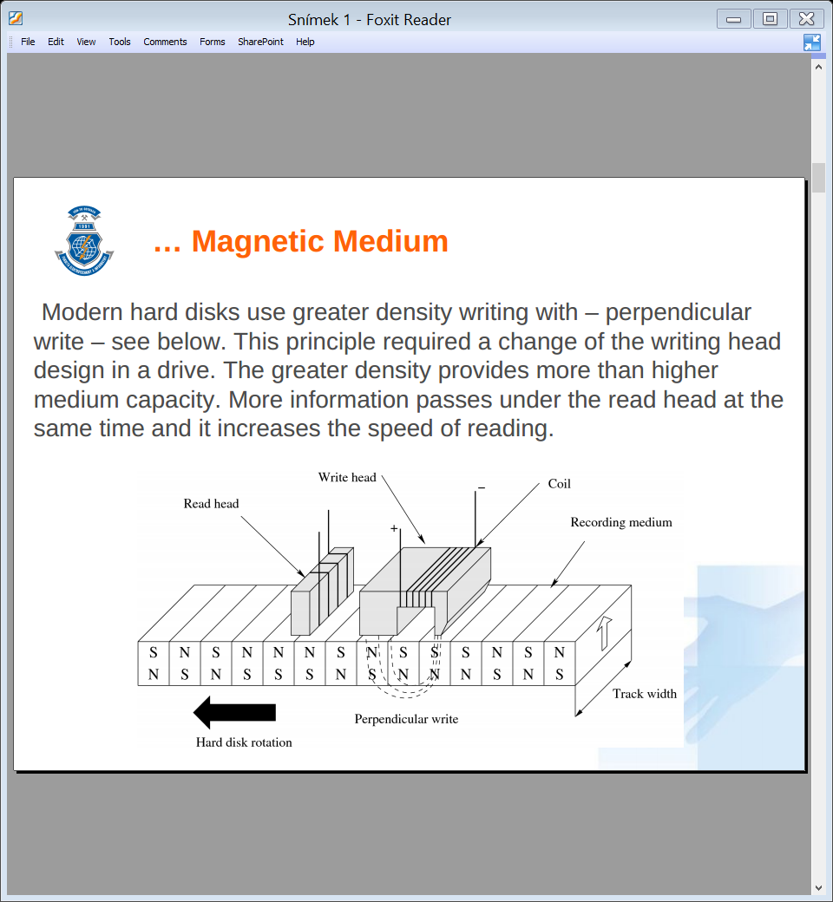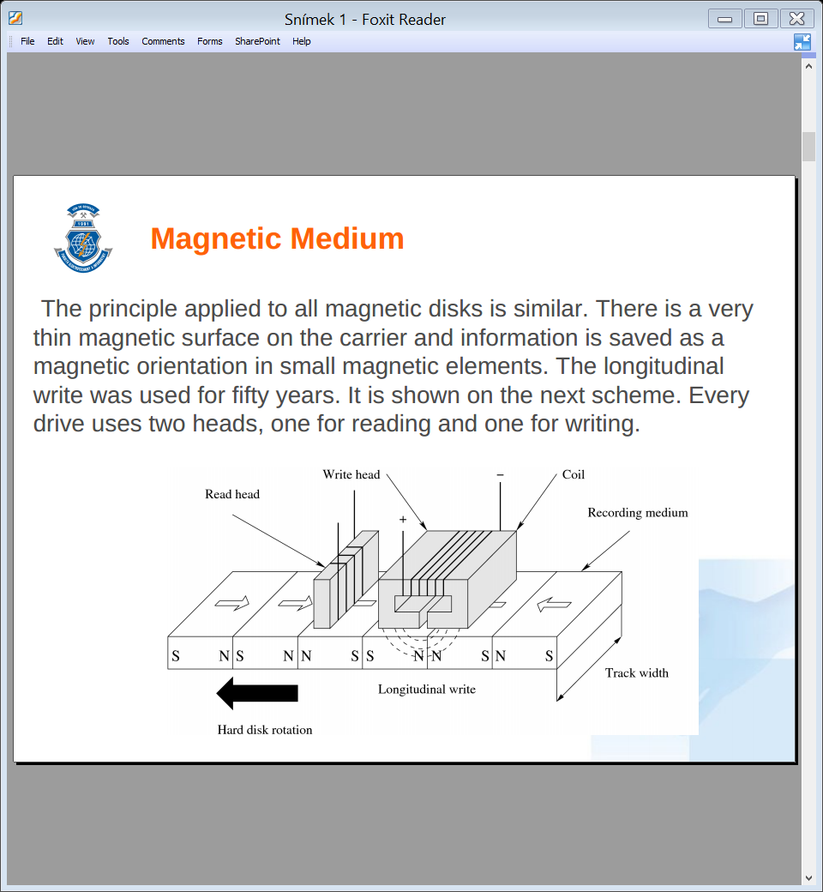There is a very thin magnetic surface on the carrier and information is saved as a magnetic orientation in small magnetic elements. The longitudinal write was used for fifty years. Every drive uses two heads, one for reading and one for writing.
Modern hard disks use greater density with perpendicular write. This principle required a change of the writing head design in a drive. The greater density provides more than higher medium capacity. More information passes under the read head at the same time and it increases the speed of reading.
Reading heads are using the Giant Magnetic Resistance. The resistance of material depends on the ability to pass electrons. But very thin layers are also affected by the quantum mechanics. Ferromagnetic material in magnetic field can pass only electrons with the same spin.
Data Encoding
The first encoding system for digital data recording on magnetic media, was frequency modulation FM. This is a simple scheme, where a 1 is recorded as two consecutive flux reversals, and a 0 is recorded as a flux reversal followed by no flux reversal. This is wasteful – each bit requires two flux reversal positions.
The modified frequency modulation reduces the number of flux reversals. Instead of inserting a synchronization reversal before each bit, one is inserted only between consecutive zeros. The Run Length Limited encoding: looks at group of bits instead of encoding one bit at a time.
Hard Disk
All hard disks consist of several major functional parts. Main parts are rounded plates with magnetic surface. All plates are mounted parallel on the spindle mounted in bearing and rotation being provided by the synchronous (three phase) motor. The speed of rotation is usually in thousands of rotations per minute and it is constant. One head (read or write) is moving above each plate surface. All heads are mounted on the pivot parallel with spindle. This pivot does not rotate, step motor only tilts them in small angle.
Plates rotate with the high speed and heads move above plate surface. All heads move synchronously, because they are mounted firmly on pivot. In each step head makes a circle on a plate, called a track. Tracks with the same order number create virtual cylinders on plates. Each track is divided into circle segments in short called sectors. Tracks and sectors are on both sides of plates. Each sector is 512 bytes.
For the maximum speed it is necessary to minimize the head movement. Thus data are in first step written to all sectors in one track. Then the writing continues on track with the same order number under the following head. When all heads finished writing to the single cylinder, then heads are moved to the next cylinder. The smallest addressing unit of the disk is one sector, thus the case is installed on the disk controller speeding up the reading.
All disks are equipped with Self-Monitoring, Analysis and Reporting Technology called S.M.A.R.T. It informs users about technical problems during running and warn them of impending drive failure. Main monitored parameters are distance between heads and plates, the number of bad sectors, the high temperature, and the time required for the disk to spin up.
Capacity – GB/TB is important parameter for the most users
Size of disk – external dimension, usually 3.5’’ or 2.5’’
Speed – RPM, usually thousands of rotations
Transfer speed – how many MB/s can disk read or write
Interface - cable connector SATA, PATA, SAS
Access time – average delay before reading
Power consumption – disk with high consumption needs cooling
MTBS – mean time between failures
Floppy Drives
5.25’’ with capacity of 360kB, 720kB and 1.2MB
3.5’’ with capacity of 720kb, 1.44MB and 2.88MB
LS-120 Superdisk with capacity of 120MB
ZIP – external or internal floppy drive with capacity 100MB
Floppy disks were manufactured in self-closing disk cartridges. Read head in the floppy drive has a direct contact with magnetic media. Floppy drive is therefore significantly slower, have a low speed and low reliability.
Optical drives
The laser diode emits the beam through a semi-transparent mirror to the first lens. Pre-focused laser beam continues through the second focusing lens to CD-ROM media. Pits or lands may/may not reflect the beam back. The bottom reflexive layer of the mirror directs the beam to the sensor – laser photo diode. This diode converts the reflected signal to a digital one and the device controller decodes them to data.
Pit depth is directly derived from the laser wavelength of 780 nm used in CD-ROM drive. Reflective index of polycarbonate is 1.55 and thus laser wavelength in polycarbonate is 500nm. The pit depth is ¼ of that value – 125nm. Track on CD-ROM media is in a spiral shape (not concentric circles). Capacity of DVD-ROM is greater not only due to higher density of information on DVD media, it also changed encoding of stored data increasing overall capacity of media nearly 7x. The spiral on CD-ROM has a total length up to 5.77 km with reading speed 150kB/s. DVD has the total length of 11.84km with the ability of two layers on both sides. Basic speed is 1.38MB/s.
The CD-R medium allow users to write their own data to the disk only once. The laser must be ten times stronger for writing than for reading. The CD-RW medium allows rewriting the data. The recording layer is located between two layers of dielectric. The recording layer can be melted by the laser and allow to write data in the same way as the CD-R medium. But each data write causes a little damage of recording layer.
The DVD disk is composed of two thinner polycarbonate disks. The DVD drive uses two laser beams for two layered disk (DVD-9, one layer DVD-5).
Magneto-optical Disks
The surface of plates is thermo-magnetic. Information is saved as magnetic orientation. Magnetic surface uses Curie temperature, when material change its ferromagnetic behavior to paramagnetic around 180°C. The surface is heated up by laser in a width of few micrometers and the write head stores data quickly. Because the heated track is very thin, its surrounding cools quickly.
For reading it uses the Kerr magneto-optical effect. The polarized light changes its orientation, when it passes through the magnetic field. The light receiver only recognizes polarization and decodes to data. Speed of reading is the same as on hard disk.
Effective – the high capacity with low price ranging from a few hundreds MB up to 600GB.
Changeable – disk are changed in drive.
Durability – information written to the disk remains there more than 100 years. The disk can be cleaned in normal way by water and detergent.
Safe – the rewriting is possible only when the surface is heated.
Many rewrites – it allow many millions of rewrite cycles.
Computer Display Units
CRT
The CRT screen is the successor of the tubes. It is a glass vacuum tube. The front part of the screen is covered by luminophores. There is electron gun on the opposite side. Electron gun emits electrons and Wehnelt Cylinder guides 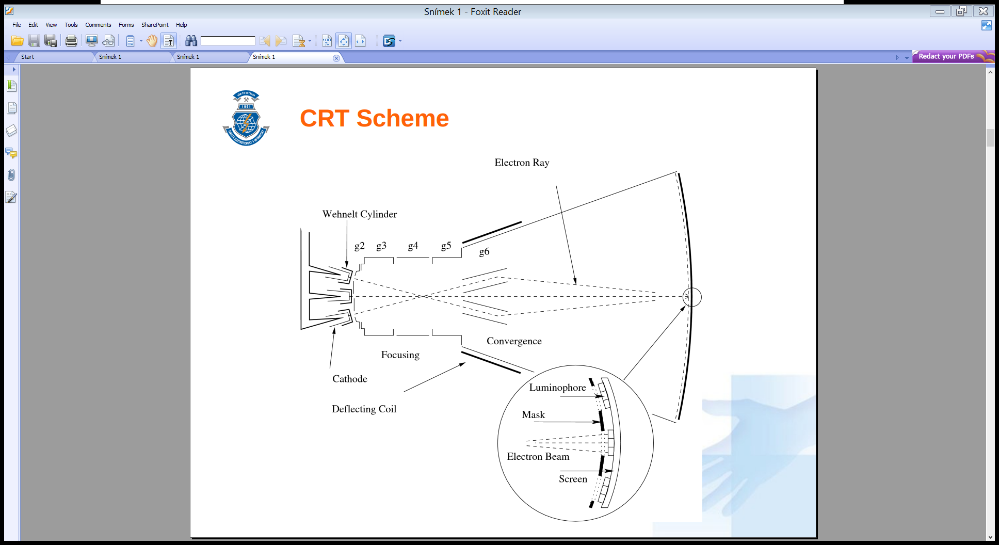them to stream. In focusing cylinder the stream is narrowed to a thin ray. Because the Electron gun is the Cathode and the Screen is the Anode, the electron ray continues to screen. Then the ray has to pass through Focusing Coils, which direct ray to specified point on the screen and it is able to control the ray intensity.
When electron ray reaches the luminophore on the screen, this material transforms the kinetic energy of electrons to photons. Thus the screen emits the light. On the screen there are three types of luminophores – red, green, blue – to achieve the colored light, and three electron guns work in the screen together, for each color individually.
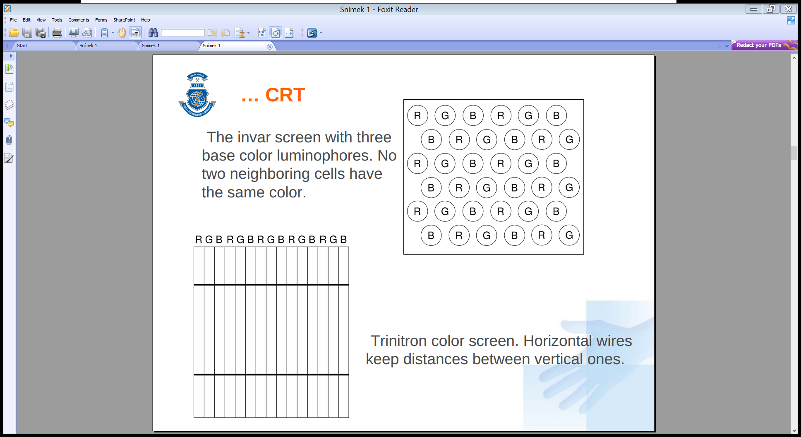The ray has to “run” over the whole screen. The movement is not random, but driven. Ray starts in the upper left screen corner and from left to right, line-by-line, quickly “draws” the image. Than the ray returns back from the bottom right corner to the upper left corner. The luminophore is able to emit light only for a few milliseconds and image has to be redrawn many times per second. For human eyes the acceptable minimum refresh frequency is 60Hz. The ergonomic minimum is 72Hz and the best refresh rate is in the range from 80Hz to 100Hz.
Invar mask – metal plate with small round holes arranged as a honeycomb. Lower image quality on the screen edges. Trinitron mask – designed by Sony, luminophor on the screen is organized in columns separated by thin wires. Screen can be flat, image is good on the whole screen surface.
The main parameters of CRT: diagonal resolution, horizontal and vertical refresh frequencies, refresh rate, resolution, bandwidth, weight, power consumption
Benefits: sharpness, color fidelity, good response, viewing angle, visible at daylight, work at all temperatures.
Disadvantages: heavy, high power consumptions, slow start, harmful radiation, aging of luminophores.
Liquid Crystal Display
The source of light is on the LCD background. This light is polarized in all directions. The light has to be polarized by the first layer and continues through transparent orientation plate to nematic layer with crystals. Crystals in this layer have one very important property. They are able to change the orientation of the polarized light. Size of change can be affected by the electrical voltage. The light with changed polarization passes through the second orientation layer to the outer polarization filter.
This filter has a orthogonal polarization relative to the first filter. Thus, only light with changed polarization in the middle layer can pass through the last layer. Brightness (intensity) of the output light is controlled by the voltage in the middle layer in nematic structures. Orientation filters help to set correct orientation of crystals in this structure. Because crystals are in liquid, their position change is delayed.
When we need a color LCD, it is necessary to add the colored layer. Light from front polarized filter passes through one basic color and because the source of light is white, the result is exactly one basic color. The resulting color is combination of all three colors, thus all pixels on the color display consist of three smaller cells with different colors.
Passive display controls pixels with wires integrated in both orientation layers. The bottom layer integrates horizontal net of wires and the top layer the vertical net. The pixel on the screen is selected by proper horizontal and vertical wires and it is activated with required voltage. But interference between the wires causes blur.
Active display with TFT has all cells with their own control transistor and pixel activation is faster and accurate.
The main parameters: diagonal resolution, thickness, brightness, contrast, viewing angle, color depth, response time.
Benefits: low power consumption, light, small dimensions, stable image.
Disadvantages: slow response, fixed resolution, color distortion, limited viewing angle, low brightness, backlight.
Plasma display
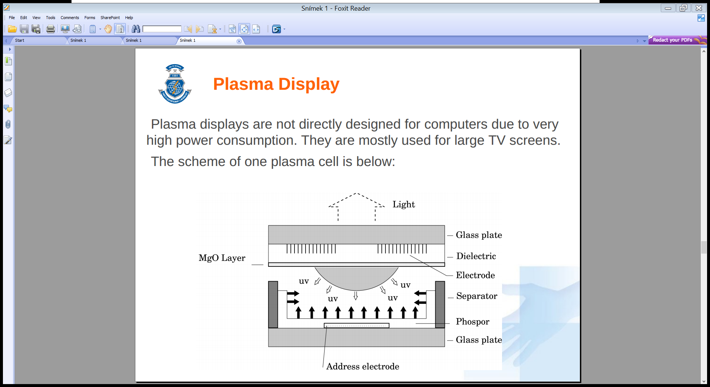Mostly used for large TV screens. The plasma is created in the small closed cell depicted on the previous scheme. The cell contains rare gases. When the voltage is connected to electrodes, gases will create the mixture of free electrons and positive atoms. Electrons are attracted to the anode and atoms to the opposite site. Now the state relaxes.
At first we need “to shake” the cell to start collisions of electrons and atoms by using the alternating current. The mess creates the plasma inside the cell and it produces a UV light. The UV light is in the cell transformed by the phosphor to the visible light. The intensity of the cell light can be regulated by the intensity of AC power. The color filter has to be added for the color plasma display, like on LCD.
Benefits: good contrast and brightness, all cells are source of light and backlight is not needed, good viewing angle.
Disadvantages: high power consumption, memory effect, cells aging, high price.
Organic LED Display
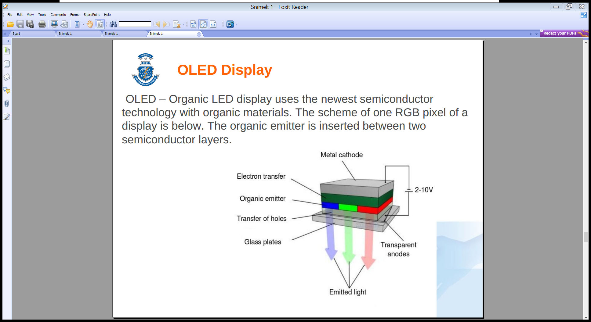The metal cathode is at the back of all layers. The second layer is semiconductor for electron transport. The next layer is an organic material capable of emitting light. The fourth layer is a transparent material for holes transport. Under the glass plate there are transparent anodes.
When the power is connected to electrodes, electrons start to cumulate in the organic layer closer to the anode. Holes cumulate on the opposite site of an organic material. Holes and electrons start “to collide” in organic layer, electrons and holes eliminate each other and emit photons. This principle is called recombination.
Active / Passive Matrix OLED has the same principle as the active and passive LCD displays, pixels are organized into a rectangular matrix. Each OLED is active in PMOLED with two orthogonal electrodes. Electrodes pass through the entire width and height of the display. In AMOLED displays all OLEDs are activated by their own transistor.
OLED display is a light source and does not need a backlight. Its output power is about 30-50 lm/W – high efficiency.
Benefits: high contrast, full range of color, low power consumption, good viewing angle, no delay.
Disadvantages: none.
E-Ink Display
One cell is in E-Ink technology called capsule. All capsules have diameter in tens or hundreds of micrometers. Capsules contains electrophoretic (electrically separable) liquid. The liquid consists of the hydrocarbon oil, which is transparent and chemically stable for very long time. White particles with the positive charge swim in the oil. Black particles have the opposite charge. The oil is thick enough to keep particles in a stable position.
White inorganic particles have the core made from the titanium oxide. The cover is silicon oxide and polymer. Black particles are made from the carbon.
When the voltage is connected to electrodes, particles are attracted to the opposite charge. The top of black or white particles is then visible through the top transparent electrode. Particles stay in last position without current after voltage disconnection.
Benefits: high contrast, readable on direct sunlight, high resolution, wide view angle, does not need backlight, zero power consumption after image redraw.
Disadvantages: few levels of gray, no colors, slow redraw with long response.
Digital Circuits
Bipolar Technology
The bipolar technology uses bipolar transistors – NPN and PNP. This technology can achieve the high speed, but it has the high power consumption and allows less integration.
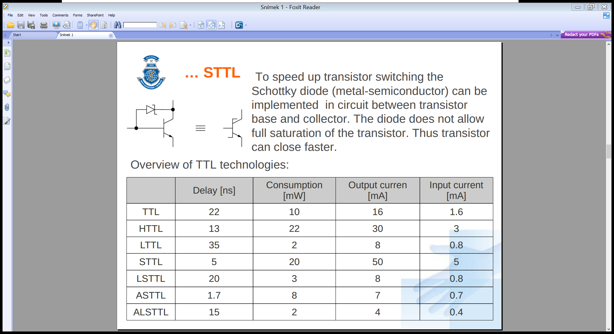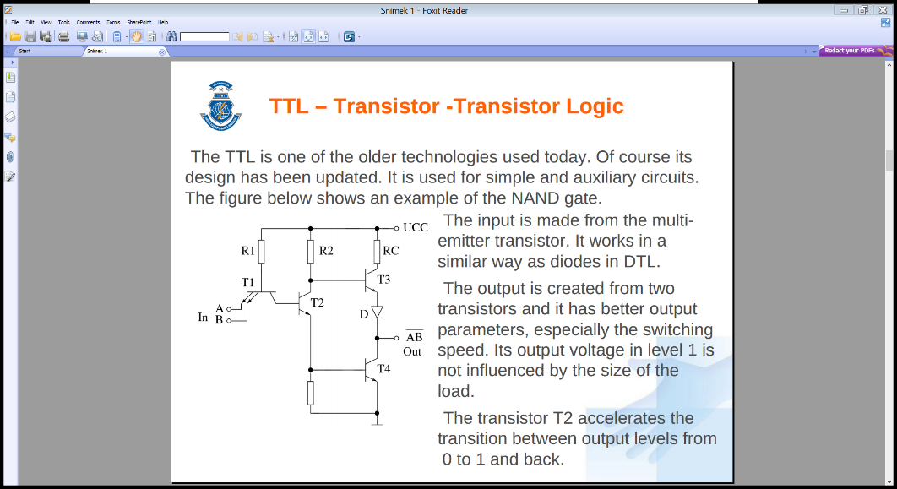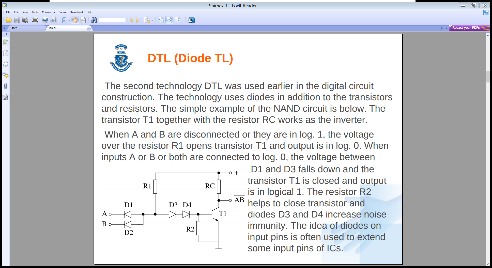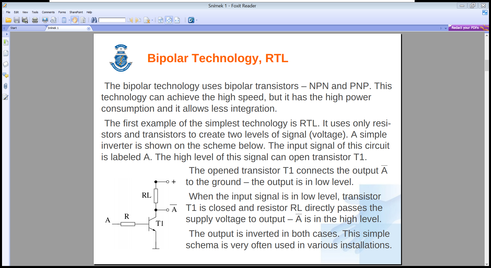Resistor-Transistors Logic
Uses only resistors to create two levels of signal. The output transistor T1 connects the output \overline{A} to the ground = the output is in low level. When the input signal is in low level, transistor T1 is closed and resistor RL directly passes the supply voltage to output - \overline{A} is in the high level.
Diode-Transistor Logic
The technology uses diodes in addition of the resistors and transistors. When A and B are disconnected on in 1, the voltage over resistor R1 opens transistor T1 and output is in 0. When inputs A or B or both are connected to 0, the voltage between D1 and D2 falls down and the transistor T1 is closed and output is in logical 1.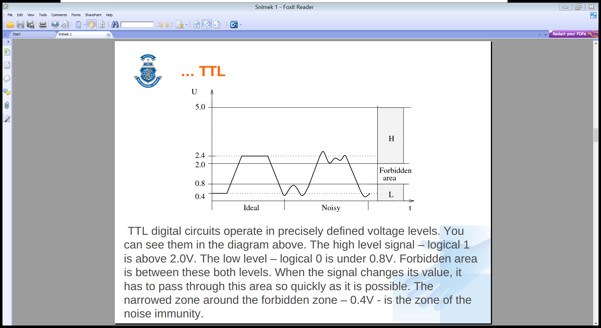Transistor-Transistor Logic
The input is made from the multiemmiter transistor. It works in a similar way as diodes in DTL. The output is created from two transistors and it has better output parameters, especially the switching speed. The transistor T2 accelerates the transition between output levels from 0 to 1 and back.
The TTL output part consists of two transistors which allows three state output. In this way, it is possible to connect more outputs on the bus.
For many application the open collector is used. The output part there is only the lower transistor and its collector is directly drained output. This output can be used to control the signal on buses or to switch higher voltage than the supply is.
TTL circuits operate in precisely defined voltage levels. The high level above 2.0V, low level under 0.8V, forbidden area is between.STTL
To speed up transistor switching, the Schottky diode can be implemented in circuit between transistor diode and collector.
Unipolar Technology
The elementary part is unipolar transistor. It is better known as Field Effected Transistor with tree electrodes: S-Source (emitter), D-Drain (collector) and G-Gate (base). The FET controls the flow of electrons from the source to the drain by affecting the size and shape of a “conductive channel” created and influenced by the voltage or a lack of it applied across the source terminal to gate. This channel is the “stream” through which electrons flow from source to drain. The FET with SiO2 insulation layer is known as MOSFET (Metal Oxide Semiconductor FET).
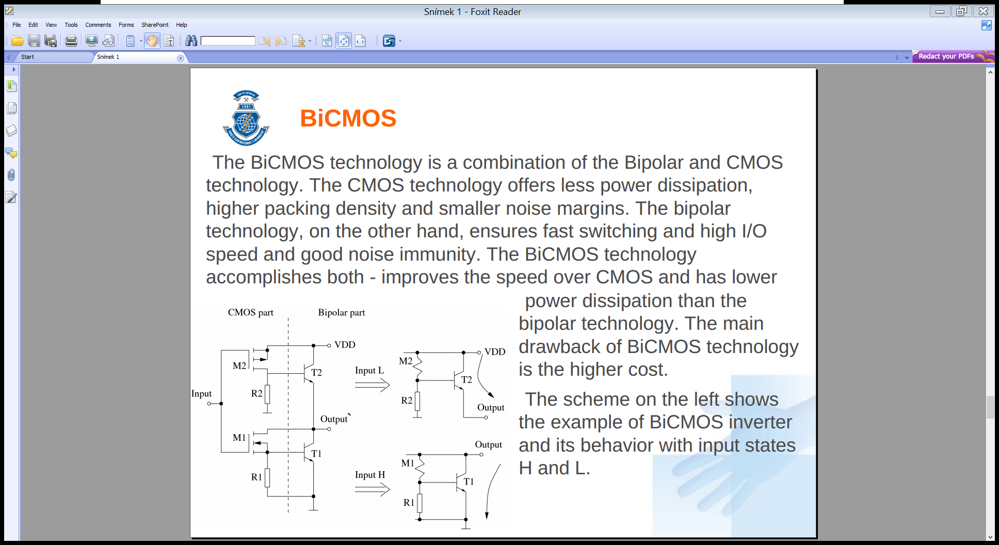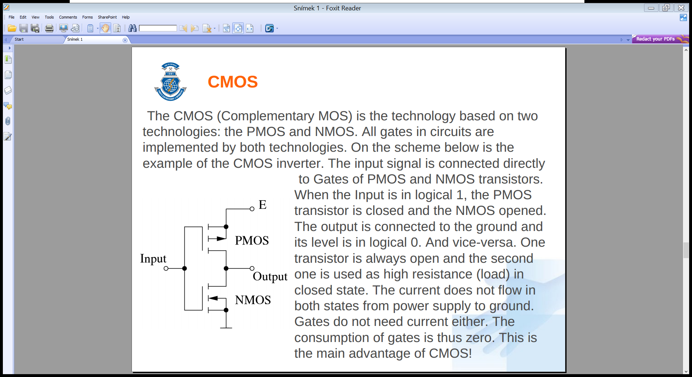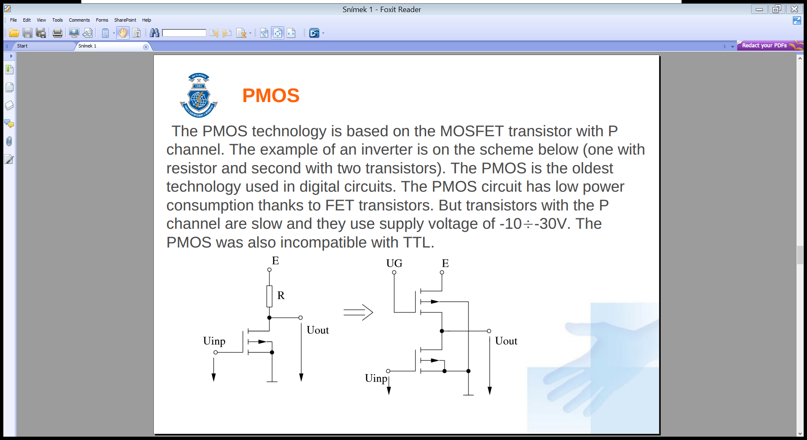PMOS (pic. 1)
MOSFET transistor with P channel, low power consumption, slow and incompatible with TTL.
NMOS
MOSFET with N channel, three times faster than PMOS, compatible with TTL.HMOS
Reduced the size of NMOS by 50 %, 8 times faster, 8 times more efficient, next generations HMOSII and HMOSIII.Complementary MOS (pic. 2)
Combination of PMOS and NMOS. When input is 1, PMOS is closed and NMOS output, the current does not flow in both states from supply to ground, consumption of gates is zero, basis of today’s computers, very good noise resistance, compatibility with TTLBiCMOS (pic. 3)
Combination of Bipolar and CMOS; bipolar ensures fast switching and high I/O speed, CMOS offers less power dissipation and higher packing density.Floating-gate Avalanche-injection MOS
Used in nonvolatile EPROM memory, the gate is programmed by electron injection and can be “cleared” by the UV light.FLOating-gate Oxide cell
Successor of FAMOS in EEPROM memories, gate can be cleared electrically.
Flash Memory
The scheme is similar to the FLOTOX technology, it uses two gates. Uses SONOS (Silicon-Oxide-Nitride-Oxide-Silicon) as a material. The floating gate of the transistor is able to store four levels of charge. Thus one transistor can store 2 bits. The cell with 2 levels of charge is called SLC – Single Level Cell. The MLC technology allows 100,000 rewrites.
NOR flash – each cell has one terminal connected directly to the ground and other one connected directly to a bit lien. The NOR is suitable for embedded devices due to low latency
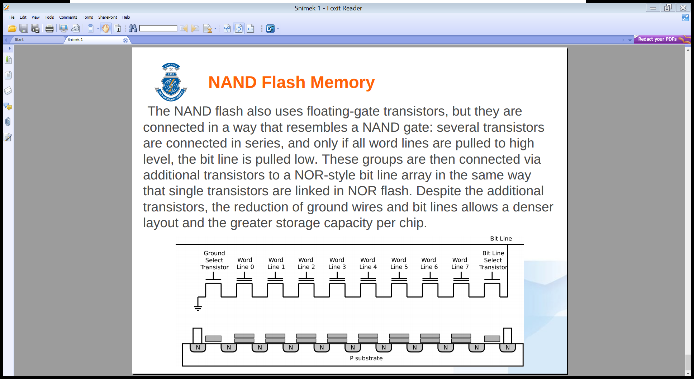NAND flash - several transistors are connected in series, and only if all word lines are pulled to high level, the bit line is pulled low. Despite additional transistor, the reduction of ground wires and bit liens allows a denser layout and the greater storage capacity per chip.
General Purpose GPU Programming and CUDA
The first GPU computing was over the OpenGL programming interfaces. Game developers needed more universal hardware, therefore pixel shaders were developed. In 2207 NVidia introduced Compute Unified Device Architecture as a small extension of C language.
GPUs are designed to run parallel many hundreds of threads. All threads have to be independent, the GPU does not guarantee the order of thread execution. GPU is designed to process the compute intensive code with a limited number of conditional jumps; is optimized for the sequential access to the main memory of graphical car with the transfer speed up to hundreds of GB/s.
CUDA Architecture
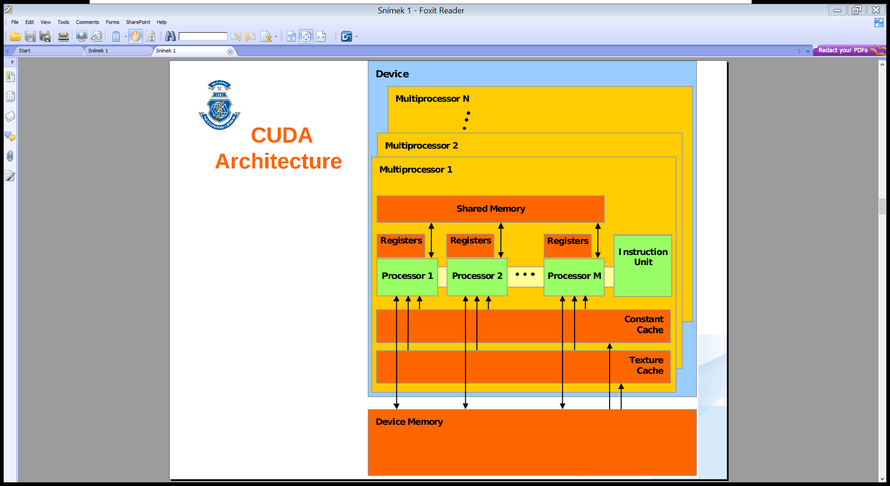graphical card is divided to multiprocessors. The device memory is shared between all multiprocessors. It consist of three parts: the global memory, texture memory and constants memory. All multiprocessors can share their data only in device memory. The design of all microprocessors is the same. They contain shared memory for all processors in the single multiprocessor. All of them have their own bank of registers. Every processor has a read-only cache to speed up access to texture and constant memories.
The FERMI architecture was introduced in 2010. Each multiprocessor contains 32 FPU double cores, 16 load/store units, 4 special function units. Each core has one ALU and FPU unit. One group of 16 cores is called half-wrap, each having one instruction decoder. For SFU are also available to handle transcendental and other special operations.
The device is a graphical card with the DRAM memory and GPU multiprocessors. The host is any computer with installed device. The memory in the device and in the host are connected only by bus. They are not shared!
Copy data from HOST memory to the DEVICE memory (using PCI-Express with transfer speed less than 5GB/s).
Start threads in DEVICE.
Execute threads in GPUs multiprocessors.
Copy results back from the DEVICE memory to HOST memory.
Rules of GPU computing
Minimize data transfer between host and device.
Use GPU only for tasks with very intensive calculations.
GPU with shared memory would be more suitable.
For intensive data transfer use pipelining.
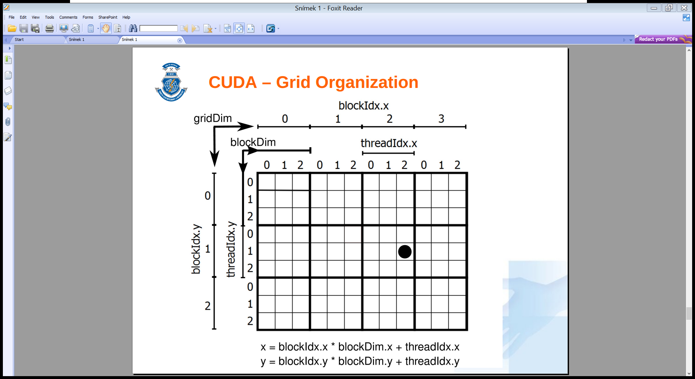GPU computing can be used alongside data transfer.
Optimize access to shared memory (sequential better than random)
Reduce divergent threads.
Select optimal thread grid.
CUDA Programming model
CUDA Programming Extensions
CUDA introduced a few language extensions to the standard.
The kernel is a function for GPU threads. The C/C++ is extended for kernel function exectuion by command name<<<gridDim, blockDim>>>( void ).
__device__ is a function modifier. This function will be executed in the device and it can be called only from the device.
__host__ is a function modifier. This function will be executed in the host and it can be called only from the host.
__global__ is a modifier for kernels. Functions will be executed in GPU, but called (started) is from CPU.
Variable type qualifier:
__device__ declares a variable that resides in the device as long as application is running.
__constant__ is used for variables places in constant memory.
__shared__ variable resides in shared memory of the block, where kernel is running.
New types are defined, all common (char, int, short, long, float, double and unsigned variants) are used as structures with suffix 1, 2, 3 or 4. For example int3 is a structure with 3 items. All members are accessible byx, y, z and w fields. There's also typedef uint3 dim3.
int3 myvar;
myvar.x = myvar.y = myvar.z = 0;
Predefined variables:
dim3 gridDim contains dimension of the whole grid.
uint3 blockIdx contains block position in grid.
dim3 blockDim contains dimension of block (all blocks in the grid have the same dimension).
uint3 threadIdx contains position of thread in block.
int warpSize contains the warp size in threads.
Threads are organized into blocks of squares, blocks are organized into grid of threads. The block volume is limited to 1024, so rectangles can be 32×32, 64×16 or 8×8.
int xCoordinate = blockIdx.x * blockDim.x +
threadIdx.x;
int yCoordinate = blockIdx.y * blockDim.y +
threadIdx.y;
The task is to design a grid to cover our problem. In the lab example, we can use one thread for each pixel of our image.
CUDA Application Program Interface
cudaMalloc() – allocates memory in device.
cudaFree() – releases allocated memory
cudaMemcpy() – copies memory between host and device, direction is given by the value cudaMemcpyHostToDevice or cudaMemcpyDeviceToHost.
cudaDeviceReset() – initialize the device
printf() – CUDA since 2.0 supports printf function
cudaGetLastError() – returns cudaSuccess or error code.
cudaGetErrorsString() – returns string or error code
__global__ void helloCUDA(float f)
{
printf("Hello thread $d, f =$f\n", threadIdx.x,
f);
}
void main()
{
helloCUDA<<<1, 5>>>(1.2345f); /// <<<gridDim,
blockDim>>>
// helloCuda<<<dim3(3, 3, 3), dim3(2, 2)>>> for 3D
organization
if (cudaGetLastError() != cudaSuccess)
printf("Error");
else printf("Kernel finished
successfully");
cudaDeviceSynchronize();
}